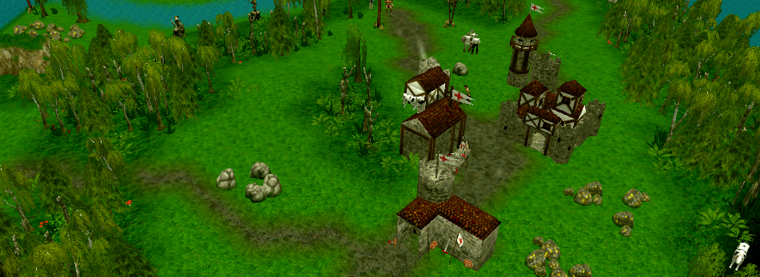

Glest is a free and open source real-time strategy computer game in a fantasy world, adding elements of past civilizations, magic and natulka. Glest is set in a fantasy world with Twelve factions: Egypt, Greece, Natives, Magic, Natulka, Norsemen, Persian, Romans, Crusaders, Tech, Japanese, The Great Ming which together form the Glestpack. Each come with their own set of units, buildings and upgrades, advantages and disadvantages, which allows for variation in strategy while keeping a balanced gameplay.
Build your Empire
Make workers early and constantly throughout the game. The earlier a worker begins gathering resources the more that worker is worth. Make a new worker for gathering resources or building stuff at least twice a minute.
Make your gold and resources work for you. If you have excess resources they are not getting "interest" spend them on buildings, workers, or combat units Scout and explore, know when an enemy attack is coming, know the terrain, and know where resources are.
Practice your order of build and base layout to make sure you get the most use out of each building and unit.
Manage Resources
Only send your units(with the exception of units you are using as scouts) towards the enemy in groups. Units used for scouts are expendable workers and builders are not. In early game focus on a mix of cheap, light, and fast units for early raids. A raid is where you send units for the purpose of killing enemy workers and vulnerable economic buildings.
Every worker unit that you manage to wipe out is lost time and gold for the enemy. Loosing workers early is a death sentence. Later in the game you may want to switch to using a single large main battle group with large numbers of high quality units.

Create Army
Concentrate the forces of your main battle group on a smaller number of enemy units. If your units kill them faster they take less damage and the enemy units can fire fewer attacks. Also make sure all of your units can support one another so that you do not become a victim of defeat in detail. Control the Center. The center of the map between both bases is the position of the most power. Controlling the center allows fastest access to areas on the map and allows greater map control.
Any attack from the enemy has to go through the center if they want their attack to be a straight line. The fastest way between two points is a straight line. If we can control the middle ground and center we can attack and respond to enemy attacks quickly.
Attack
Use the terrain. Bottle necks or choke points are great places to defend. If the enemy army has to thin out to go through a bottle neck or choke point we can defeat their units more easily and with fewer casualties.
Maintain constant contact with the enemy. Always keep a scout and your main battle group close enough to the enemy to apply pressure and respond to enemy troop movements. If you see your enemy building defensive towers and you are right there you can attack and destroy the towers they are building. There is a great advantage to keeping constant contact with your enemy.

Victory
An army that is everywhere strong is in reality everywhere weak. Sometimes you can go around the strongest part of their army and destroy their base or other unsupported units. Be flexible to respond to changes your enemy makes. If your army is weak: act in strength, if your army is strong: act as though you are weak. Deception can win wars. You do not need to actually destroy an area to apply pressure there.
The threat of attack can be used to force your enemy to divert forces to that area. Do not hesitate to retreat if the military engagement will result in a loss, retreat and regroup with more forces for a response. Try to engage the enemy when your forces have the advantage.